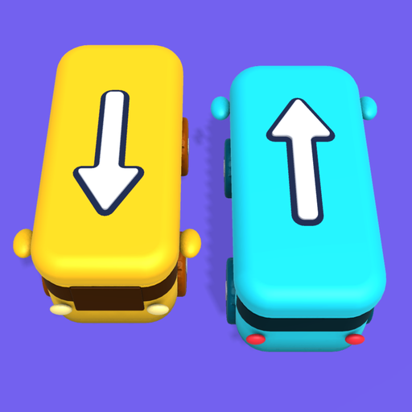

HonkalotSupport
Stuck on a level or found a bug? Email ignisgaming26@gmail.com with your device model and the level number, and you will get a reply.
How do I play?
Tap a car to drive it out in the direction of its arrow. It parks in a free spot, and waiting passengers of the same colour get on. When a car is full it drives away. Clear every passenger to win.
I ran out of spots
Unlock an extra spot with coins, use the Express spot, or restart the level. Every level can be solved with the spots you start with.
What do the boosters do?
Express parks the next car you tap in the extra Express spot. Sort moves passengers who can board a parked car to the front of the line. Shuffle swaps the colours of the cars still waiting in the lot. Each level you win gives you 40 coins, and you can buy boosters and extra spots with coins.
Will I lose my progress?
Progress is saved on your device after every level. Uninstalling the game or clearing its data removes it.